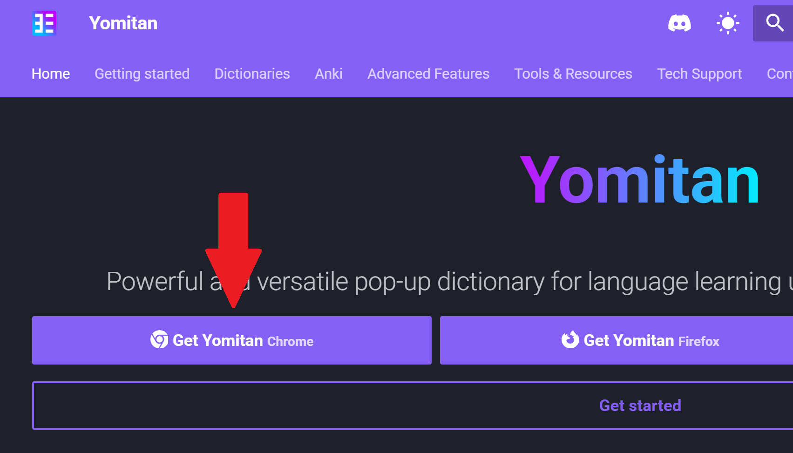

Как пользоваться Yomitan
Yomitan — это расширение для браузера, позволяющее быстро проверять значения иностранных слов в словаре и их произношение. В этой статье вы узнаете, как настроить Yomitan для английского языка. Чтобы понять, как всё будет выглядеть после настройки, посмотрите видео ниже.
Давайте установим Yomitan, настроим его для английского и разберемся, как им пользоваться.
Установка Yomitan
- Откройте официальную страницу расширения.
- Нажмите Get Yomitan Chrome.
 Если на одном из скриншотов плохо виден текст, нажмите на скриншот, чтобы открыть его в новой вкладке. Там вы сможете увеличить картинку. - Выберите Установить.
- Нажмите Установить расширение.
Настройка Yomitan
- Справа вверху нажмите на значок в виде пазла.
- Выберите Yomitan Popup Dictionary.
- Нажмите на значок шестерёнки.
- Yomitan откроется.
- Отключите параметр Show the welcome guide on browser startup.
- Из списка Language выберите English (en).
- Появится окно Recommended settings.
- Включите параметры Setting scanning.scanResolution = "word", Setting translation.searchResolution = "word" и Setting parsing.enableScanningParser = false (если они не включены) и выберите Apply.
- Снова откроется главная страница расширения.
- Нажмите Configure Installed and enabled dictionaries...
-
Сейчас мы загрузим бесплатный англо-русский словарь, который основан на словаре Wiktionary.
- Откройте страницу словаря.
- Чтобы скачать его, выберите в таблице en-ru или просто перейдите по этой ссылке.
- Вернитесь в Yomitan.
- Нажмите Import.
- Перетащите в окно Yomitan файл, который вы скачали.
- Подождите, пока завершится загрузка данных. На это может уйти какое-то время.
- Когда словарь загрузится, выберите Close.
- Поздравляю, Yomitan настроен.
Использование Yomitan
- Откройте любую веб-страницу с англоязычным текстом, например en.wikipedia.org/wiki/Cheese.
- Удерживая клавишу Shift на клавиатуре, наведите курсор на интересующее вас слово.
- Появится окно с этим словом.
- Вы увидите разные определения.
- Чтобы послушать произношение выбранного слова, нажмите на значок аудио.
- В зависимости от слова также могут показываться примеры его использования. Например, проверьте слово available. Нажмите на кнопку пример.